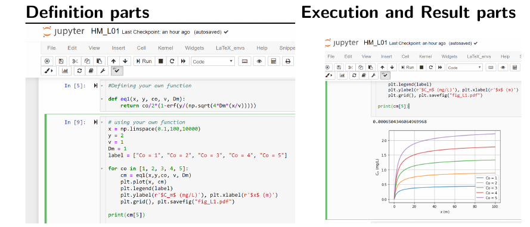

JUPYTER Notebook Interface for Python¶
As we mentioned earlier, this interactive book/course can be used without any programming experience. Code based calculations that is part of this book can be mostly executed in the book itself. The codes provided in the book, still with only limited skill programming skill, can be adopted for more illustrative use. This can be done in two ways. First approach, and a quick one, will be to use the web-based tool called Binder Project. The second approach will be to use the codes in the off-line systems. Common to both approach is very useful computing interface called JUPYTER.
Here we briefly learn about JUPYTER interface.
JUPYTER is a computing interface and has been in development since 2015. JUPYTER provide computing interface for several programming language, and thus its name is derived from:
JU : Julia programming language
PY : Python programming language
R : R programming language
More important aspects of JUPYTER computing interface:
Browser-based tool: - i.e., should also run in smartphone/tabs in a
OPen-source: i.e., community based development and personalization
Active development: Very actively under development, especially from academic/research sector.
How to use JUPYTER¶
JUPYTER has a block-based interface (called CELL). Each Cell is either an input (In[1]) cell or corresponding an output (Out[1]) cell. The input and output cells can be interactively operated.
{kind=link}
The cell-based interface is very intuitive specially for learning as it can show combine for example the code or mathematical concept with a visualization, i.e., both the cause and effect can be observed immediately and dynamically.
{kind=link}
For more advanced use, JUPYTER interface can be used for developing codes in different programming languages other than Python.
The JUPYTER cheat-sheet (from here] can be helpful to get quickly started.
Also, for better computing and learning, installing JUPYTER locally in personal system is encouraged. This can be done using the instructions provided here.